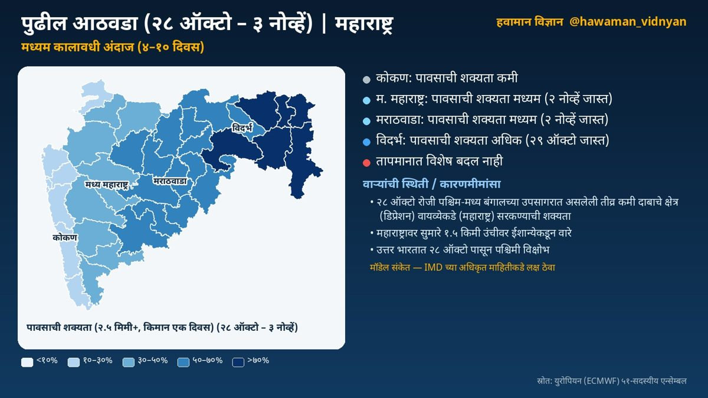
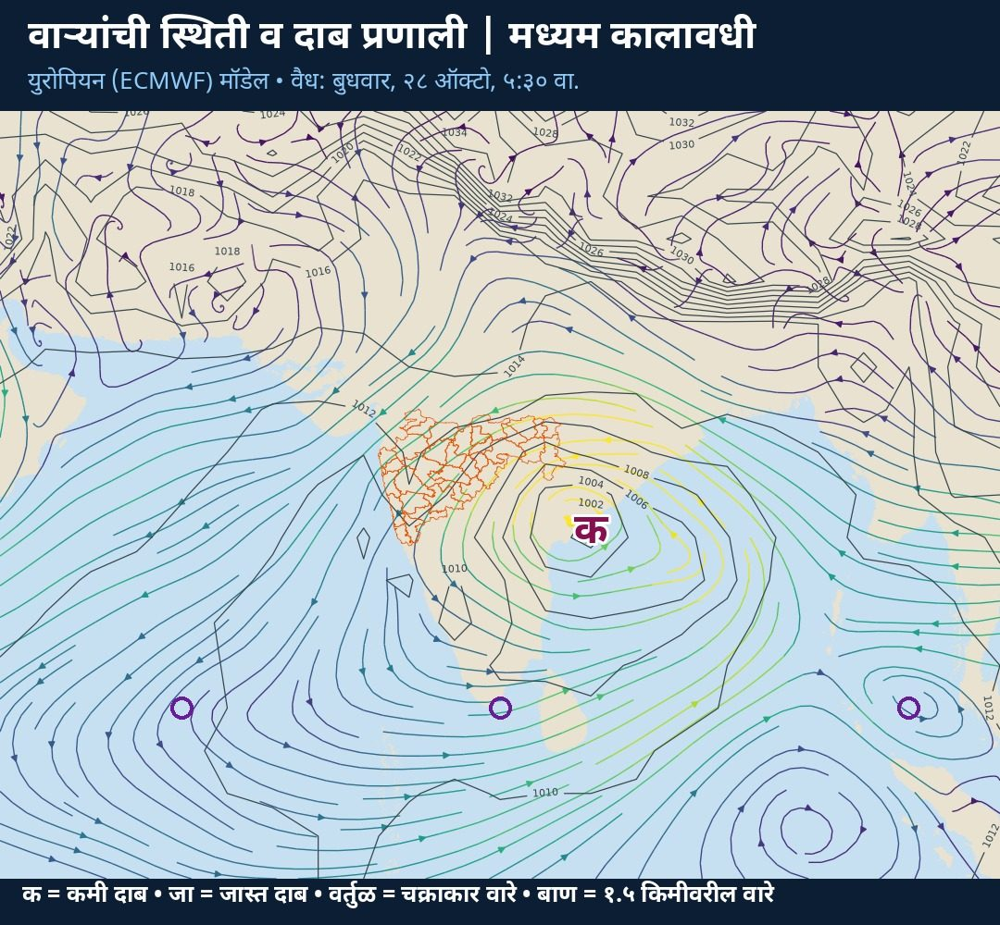

मध्यम कालावधी अंदाज · स्रोत: हवामान विज्ञान स्वयंचलित विश्लेषण
☔ पावसाची शक्यता:
⛅ कोकण: कमी
🌦️ म. महाराष्ट्र: मध्यम
🌦️ मराठवाडा: मध्यम
🌧️ विदर्भ: अधिक
🌀 २८ ऑक्टो रोजी पश्चिम-मध्य बंगालच्या उपसागरात असलेली तीव्र कमी दाबाचे क्षेत्र वायव्येकडे सरकण्याची शक्यता

हवामानामागचे कारण
🌀 वाऱ्यांची स्थिती व कारणमीमांसा:
• २८ ऑक्टो रोजी पश्चिम-मध्य बंगालच्या उपसागरात असलेली तीव्र कमी दाबाचे क्षेत्र (डिप्रेशन) वायव्येकडे (महाराष्ट्र) सरकण्याची शक्यता (मॉडेल संकेत; IMD च्या अधिकृत माहितीकडे लक्ष ठेवा). या प्रणालीमुळे राज्यात ढगाळ हवामान व पावसाची शक्यता वाढू शकते
• २८ ऑक्टो रोजी पूर्व भारतावर असलेली तीव्र कमी दाबाचे क्षेत्र (डिप्रेशन) नैऋत्येकडे (महाराष्ट्र) सरकण्याची शक्यता (मॉडेल संकेत; IMD च्या अधिकृत माहितीकडे लक्ष ठेवा)
• महाराष्ट्रावर १ नोव्हें दरम्यान कमी दाबाचे क्षेत्र तयार होण्याचे संकेत; प्रणाली दक्षिणेकडे (पूर्व-मध्य अरबी समुद्र) सरकण्याची शक्यता
• महाराष्ट्रावर सुमारे १.५ किमी उंचीवर ईशान्येकडून वारे
• उत्तर भारतात २८ ऑक्टो पासून पश्चिमी विक्षोभ; तो पुढे सरकल्यानंतर उत्तरेकडील थंड वाऱ्यांमुळे राज्यात किमान तापमानात घट होऊ शकते
• पुढील काळात हवेच्या मधल्या थरातील बाष्प वाढत आहे
📌 अधिक तपशील:
🌡️ तापमानात विशेष बदल नाही
ℹ️ स्रोत: युरोपियन (ECMWF) ५१-सदस्यीय एन्सेम्बल
⚠️ हा मॉडेल-आधारित अंदाज आहे. अधिकृत इशाऱ्यांसाठी भारतीय हवामान विभाग (IMD) व स्थानिक प्रशासनाच्या सूचना पाहा.

दैनंदिन अपडेटसाठी X वर फॉलो करा: @arvind_pagire
हा इशारा माझ्या वैयक्तिक विश्लेषणावर आधारित माहितीपर मजकूर आहे. अधिकृत हवामान अंदाज व इशाऱ्यांसाठी कृपया भारतीय हवामान विभागाचे संकेतस्थळ mausam.imd.gov.in किंवा 'मौसम' / 'दामिनी' ॲप पाहा.